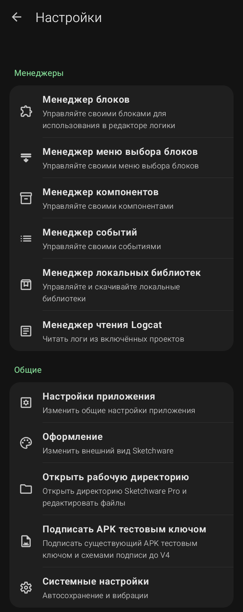

Главное меню настроек (Настройки)

Это центр управления всей программой. Он разделен на две большие группы: «Менеджеры» (для продвинутых пользователей) и «Общие» (для всех).
Группа «Менеджеры»
- Менеджер блоков: позволяет управлять блоками для визуального программирования. Вы можете добавлять свои собственные блоки или палитры.
- Менеджер меню выбора блоков: управляет списком блоков, которые появляются при выборе действия в редакторе логики.
- Менеджер компонентов: позволяет добавлять новые компоненты (например, поддержку новых датчиков или библиотек), которых нет в стандартной поставке.
- Менеджер событий: управляет событиями (например, нажатие кнопки, запуск приложения). Позволяет создавать свои собственные события.
- Менеджер локальных библиотек: позволяет скачивать и подключать сторонние библиотеки (зависимости) для расширения функционала ваших приложений.
- Менеджер чтения Logcat: инструмент для отладки. Показывает системные логи (журнал событий) вашего приложения в реальном времени, что помогает находить ошибки.
Группа «Общие»
Sketchware Pro 7 · Автор: RasNikGal · © 2026